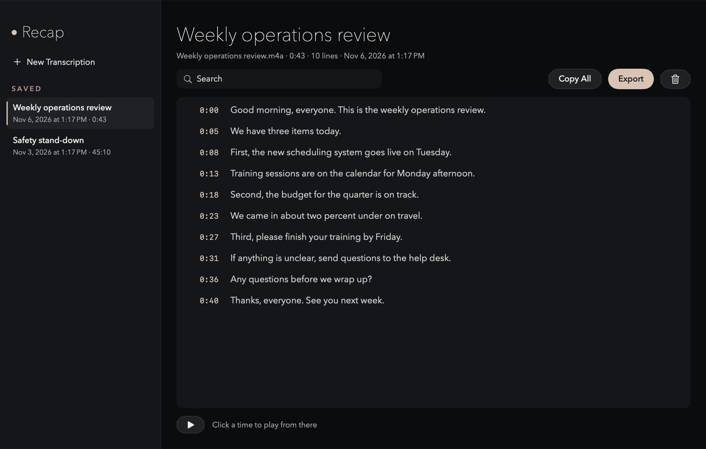
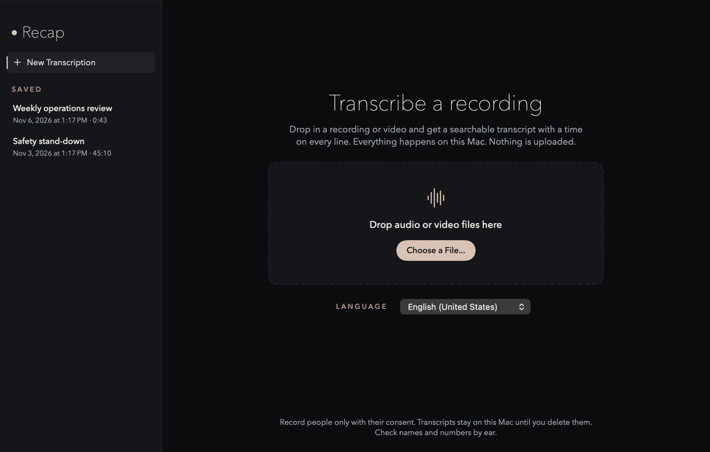
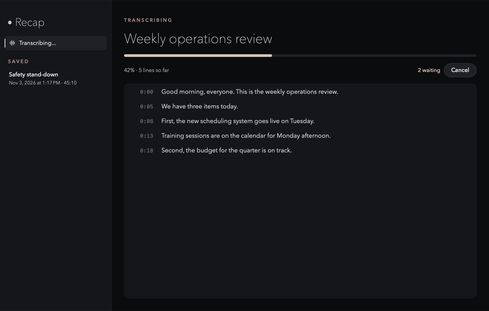
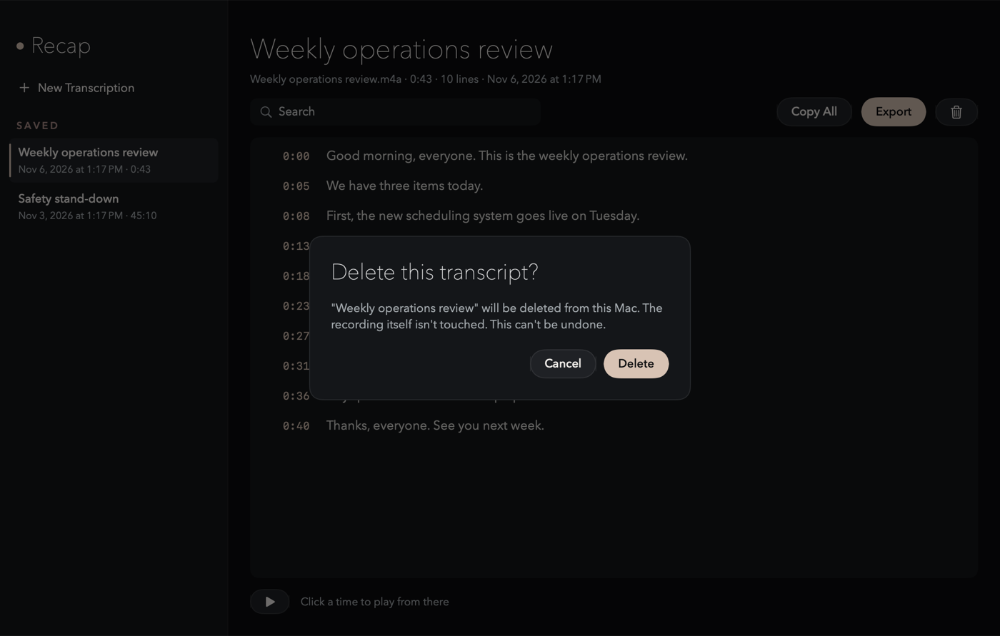

Turn a recording into a searchable transcript, on your Mac.
Nothing is uploaded. Drop in a meeting recording, a voice memo or a video, and get every line with its time, ready to search, play back and export.
Download RecapmacOS 26 or later
Free and open source. The first time you open it, macOS asks you to allow it once: see the steps.

Every word, with the time it was said
On your Mac only
Apple's speech engine runs on your Mac. Recap reads your recording where it is and never copies or uploads it.
Fast
A 4 hour recording takes about 2 minutes on an M5 MacBook Pro.
Every voice
Meeting and screen recordings often keep you and the other people on separate tracks. Recap mixes every sound track, so nobody is left out.
Search
Type a word or two to see only the lines that have them. Accents and capitals don't matter.
Play from any line
Click a time to hear the recording from there. The line playing is highlighted.
Five export formats
Plain text, Markdown, SRT and WebVTT subtitles, or JSON. Or Copy All.
Kept until you delete it
Transcripts are saved on your Mac and listed in the sidebar. Deleting one asks first, and never touches the recording.
A queue
Drop several files at once. Recap does them one after another and shows how many are waiting.



Get it running
Recap isn't signed with a paid Apple developer certificate, so macOS asks you to allow it the first time. It takes a minute.
- Download Recap.zip, open it, and drag Recap to your Applications folder.
- Open Recap. macOS says it was blocked. Click Done.
- Open System Settings > Privacy & Security, scroll down to Security, and click Open Anyway next to "Recap" was blocked.
- In the box that pops up, click Open Anyway again (not Move to Trash), then confirm with your password or Touch ID. You only do this once.
To remove it, quit Recap and drag it to the Trash.
Or build it yourself
Building it yourself takes about a minute and skips the warning. You need macOS 26 or later and the Xcode Command Line Tools.
git clone https://github.com/KevinPlanet9/recap.git
cd recap
scripts/build-app.sh --installNew versions in one click
When you open Recap, it tells you if a new version is out. One click installs it.
Checking GitHub for updates is the only thing that goes online. Sparkle's Downloader, a separate helper from Sparkle (an open source updater), does the check and the download, over https. The Recap app itself has no network permission. Each update must carry a valid signature matching Recap's key, checked before it's unpacked. Your transcripts and recordings never leave your Mac and are never sent.
To stop the check, untick Check for Updates Automatically in the Recap menu. Then no check starts unless you choose Check for Updates there.
Good to know
Check names and numbers by ear
Like any speech recognition, Recap can mishear them. Click the time to listen before you rely on one.
No speaker labels yet
Lines aren't marked with who said them.
Ask first
Record people only with their consent, and follow your organization's rules for keeping recordings.
New languages download once
The first time you use a language, macOS downloads its speech model from Apple. After that it works offline. That download is made by macOS, not by Recap.
Your recordings stay on your Mac
Speech is recognized on your Mac. Recap runs in the macOS sandbox with no network permission, so macOS itself blocks it from the internet. It reads recordings where they are and never copies them, and it keeps transcripts in its own folder until you delete them. There's no account, no analytics, no crash reporting and no tracking. The update check above is the one exception, and it never sends your files.
Read SECURITY.md for each privacy control and where it lives in the code.